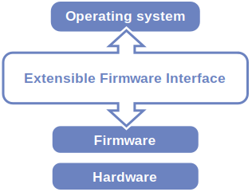
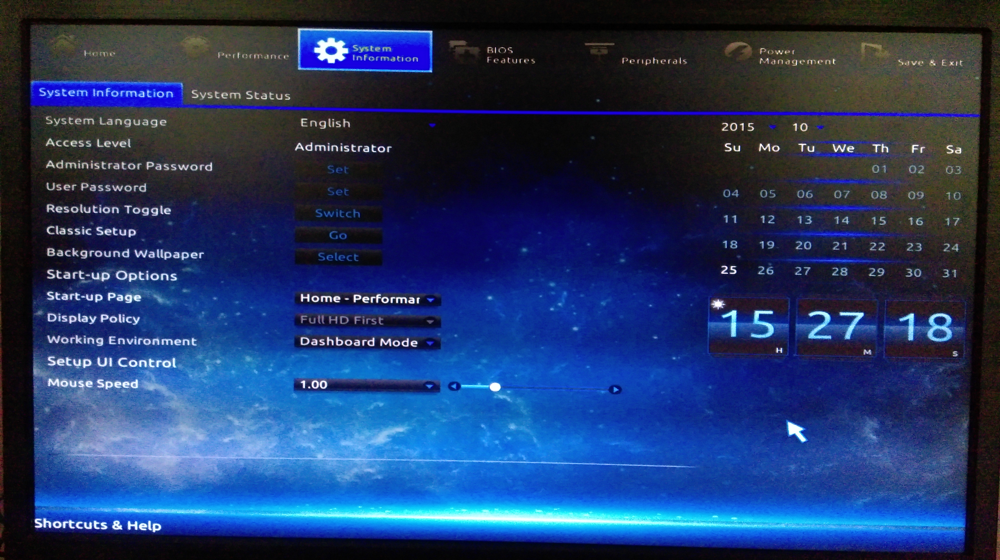

fsf statement
-
We, the undersigned, urge all computer makers implementing UEFI's so-called "Secure Boot" to do it in a way that allows
free software operating systems to be installed.
To respect user freedom and truly protect user security, manufacturers must either allow computer owners to disable the
boot restrictions, or provide a sure-fire way for them to install and run a free software operating system of their choice.
We commit that we will neither purchase nor recommend computers that strip users of this critical freedom,
and we will actively urge people in our communities to avoid such jailed systems.
master boot record
GPT
* EFI system partition
MBR
MBR Content
MBR information
- Master Boot Record
- Boot sector at fist sector of mass storage - preceding the first partition
- Contain executable code to run operating system or passing to loader's second stage like grub
MBR Content
- Partition table
- Bootstarp code - passing to bootable partition loader, ...
MBR information
- Number of partition - 4 primary
- Size of partition ( 2 TB - max )
| Address | Description | Size (bytes) | ||
|---|---|---|---|---|
| Hex | Dec | |||
| +000h | +0 | Bootstrap code area | 446 | |
| +1BEh | +446 | Partition entry #1 | Partition table (for primary partitions) | 16 |
| +1CEh | +462 | Partition entry #2 | 16 | |
| +1DEh | +478 | Partition entry #3 | 16 | |
| +1EEh | +494 | Partition entry #4 | 16 | |
| +1FEh | +510 | 55h | Boot signature[a] | 2 |
| +1FFh | +511 | AAh | ||
| 512 | ||||

GPT
GPT content
- GUID Partition Table
- Replace with MBR
- Part of EFI standard
- 2*64 - max disk size - 128 partition ( could be more than it )
GPT content
- sector 0 for mbr protective - GPT header begin from sector 1 from hard disk - entries
- copy header and entries at end of the disk

ESP
Grub 2
efi system partiton
e.x file: grubx64.efi - binary file
Contains addition support for grub 2
Grub 2
How grub 2 work with uefi and esp ?! perhaps: load stage 1 from ESP - load /boot/grub
booting: gpt/mbr in bios based computer

linux startup process